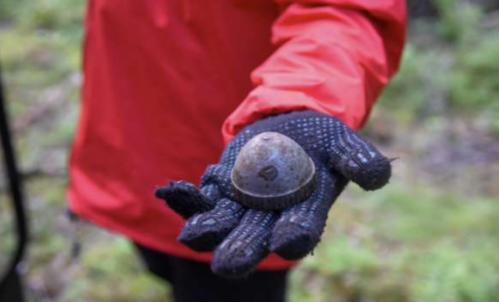
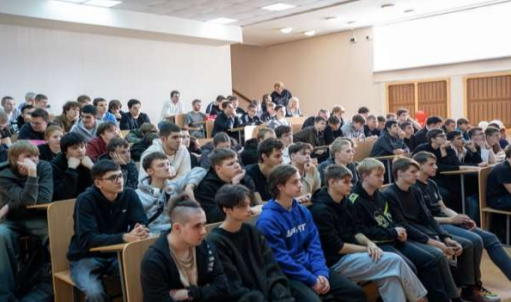

САНКТ-ПЕТЕРБУРГСКОЕ РЕГИОНАЛЬНОЕ ОТДЕЛЕНИЕ ВСЕРОССИЙСКОГО ДОБРОВОЛЬЧЕСКОГО МОЛОДЕЖНОГО ОБЩЕСТВЕННОГО ДВИЖЕНИЯ «ЗА ПАТРИОТИЧЕСКОЕ, ДУХОВНО-НРАВСТВЕННОЕ ВОСПИТАНИЕ МОЛОДЕЖИ «ВОЛОНТЕРСКАЯ РОТА БОЕВОГО БРАТСТВА»
Проект ориентирован на представителей студенческой молодежи в возрасте от 18 до 25 лет, проживающих в г. Санкт-Петербург, не вовлеченных в практики по сохранению исторической памяти в количестве 400 человек.
Проблема проекта связана с недостаточной осведомленностью студенческой молодежи о событиях Великой Отечественной войны и Блокады Ленинграда. Влияние зарубежных СМИ и лидеров мнения формирует у представителей молодежи ошибочное суждение о вкладе советского солдата в победе над фашизмом и значимости подвига ленинградцев. В связи с тем, что технической возможности ограничить влияние зарубежных масс-медиа невозможно, следует уделить внимание воспитанию лидеров молодежного мнения, которые будут транслировать знания среди своей аудитории и пресекать попытки альтернативного пересказа истории.
Проект «Прорыв не будет забыт» включает:
- проведение военно-поисковой вахты на территории реальных сражений за Ленинград;
- проведение военно-исторической реконструкции;
- проведение серии вечерних иммерсивных военно-исторических активностей;
- организацию образовательного коворкинга по изучению малоизвестных фактов о Блокаде Ленинграда.
 Количество благополучателей: 400 человек.
Количество волонтеров: 7 человек.